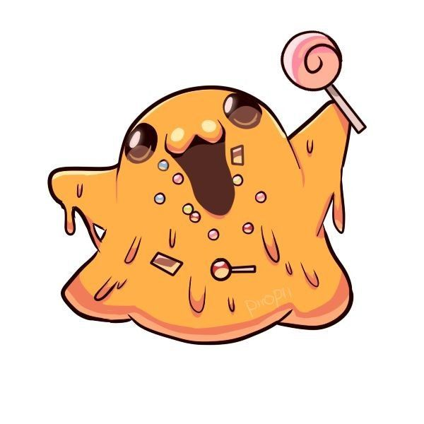
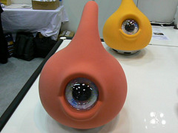
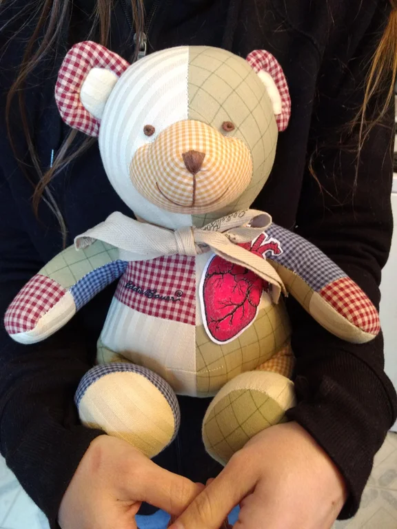
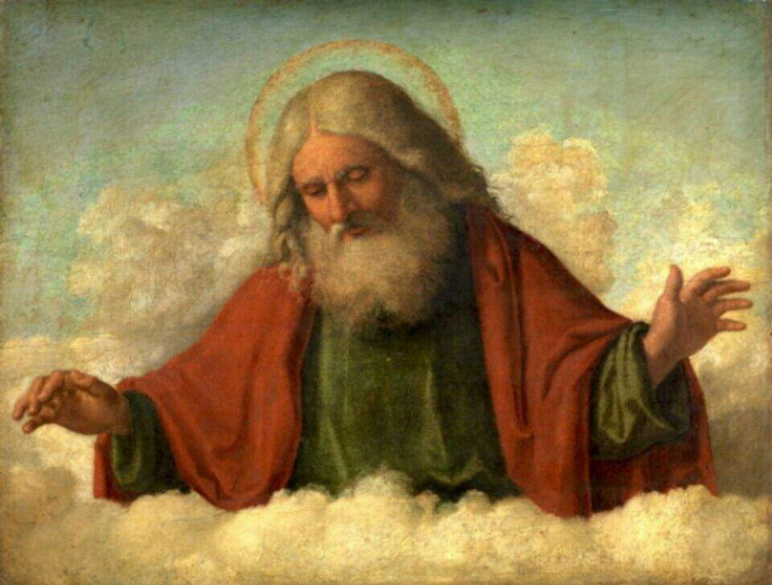
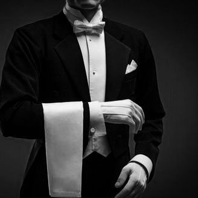
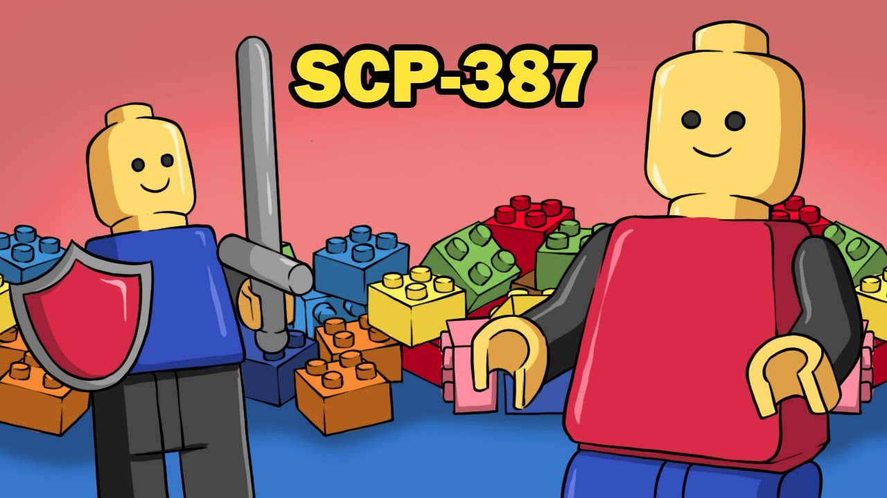
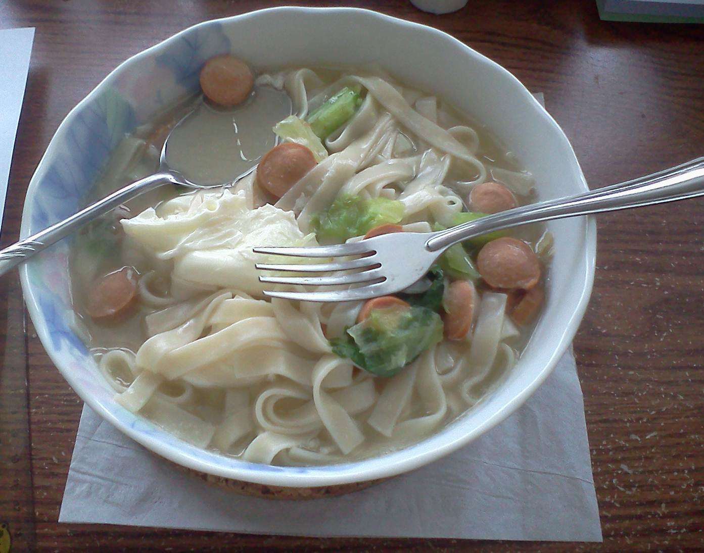
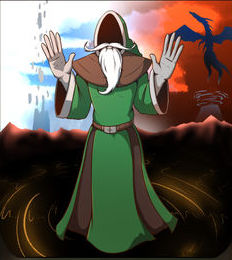
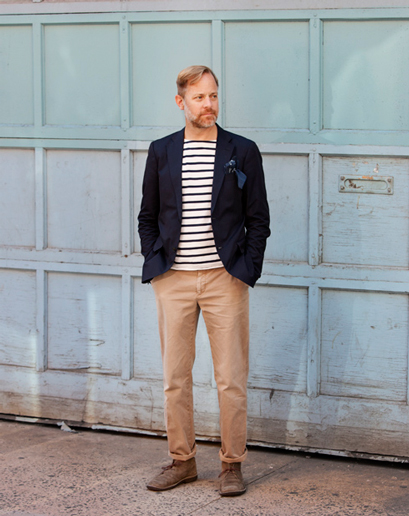
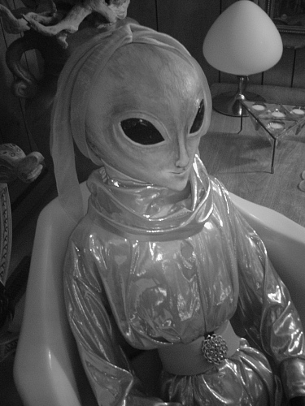

|
SCP-999
Descripción: SCP-999 parece ser una gran masa amorfa y gelatinosa de
fango naranjo traslúcido, pesando alrededor de 54 kg (120 lbs), con una
consistencia similar a la de la mantequilla de cacahuate.
El temperamento del sujeto puede describirse como juguetón y parecido a un perro:
Cuando se le acercan, SCP-999 reaccionará con una euforia abrumadora, deslizándose
hacia la persona más cercana y saltando sobre ella, "abrazándola" con un par de
seudópodos mientras acaricia la cara de la persona con un tercer seudópodo,
emitiendo gorjeos agudos y arrullos todo el tiempo. La superficie de SCP-999
emite una fragancia placentera que difiere según con quién interactúe.
Los olores registrados incluyen chocolate, ropa recién lavada, tocino, rosas,
y Play-Doh™.
Si bien la criatura interactuará con cualquiera, parece tener un interés
especial en aquellos que son infelices o están heridos de alguna forma.
Personas que sufrían de depresión paralizante o TEPT, por ejemplo, han
declarado tener una visión mucho más positiva de la vida después de múltiples
interacciones con SCP-999. Actualmente se discute la posibilidad de manufacturar
antidepresivos a partir del fango de SCP-999.

|
|
SCP-131
Descripción: SCP-131-A y SCP-131-B (cariñosamente apodados “Eye-Pods” por parte
del personal) son un par de criaturas con forma de lágrima de aproximadamente 30
cm (1 pie) de longitud, con un solo ojo azul en medio de sus cuerpos. SCP-131-A
es de un color naranja, mientras que SCP-131-B es de color amarillo mostaza. En
la base de cada criatura hay una protuberancia en forma de rueda que permite la
locomoción, lo que sugiere que las criaturas tienen un origen biomecánico. Los
sujetos pueden moverse con asombrosa rapidez, abarcando más de 60 m (200 pies)
en cuestión de segundos. Sin embargo, carecen de un sistema de frenado,
lo que los ha llevado a unos bastante espectaculares, si no demasiado divertidos,
accidentes que involucran a las criaturas. Los sujetos también
han demostrado la capacidad de subir superficies escarpadas, y se han
perdido en las salidas de ventilación en más de una ocasión.

|
|
SCP-2295
Descripción: SCP-2295 es un oso de peluche hecho de retazos,
que mide aproximadamente 0.46m de la 'cabeza' a los 'pies,' y
está relleno con fibra sintética y algodón. SCP-2295 tiene un
pin de corazón pequeño y anatómicamente correcto en la parte izquierda
de su tórax, y un moño atado alrededor de su cuello. La tela y el color de
los parches en SCP-2295 varía. Las pruebas confirman que ningún componente de
SCP-2295 contiene propiedades químicas anómalas.
SCP-2295 entra en estado activo cuando se encuentra dentro de dos (2)
metros a la redonda de un humano con traumatismos mayores sobre un órgano.
Si está en la proximidad de dos o más sujetos, SCP-2295 invariablemente escogerá
al que sea más joven. SCP-2295 producirá tijeras, hilo blanco, y agujas o un
gancho de tejer anómalamente desde su boca, y usará cualquier tela y relleno que
se encuentre cerca1 para crear una instancia de SCP-2295-1, una imitación del órgano
el sujeto hecho de tela2. SCP-2295-1 se desvanecerá de la vista y el sujeto caerá
a un estado de inconsciencia. La instancia de SCP-2295-1 entonces reemplazará el
órgano dañado del sujeto por medios anómalos. La ubicación de los órganos
reemplazados de esta manera es desconocida.
Si no hay material utilizable en sus cercanías, SCP-2295 usará tejidos y relleno
de sí mismo. SCP-2295 regenera un (1) gramo de relleno cada día hasta
reemplazar por completo cualquier material perdido o usado. Nótese que la
tela usada de esta manera no se regenera, y se debe colocar tela adicional
cerca de SCP-2295 con el propósito de auto-reparos.
Las instancias de SCP-2295-1 llevan a cabo sus respectivas funciones con
éxito, a pesar de las incompatibilidades biológicas, químicas y médicas esperadas.
Una vez dentro del sujeto, los tejidos y venas adyacentes al órgano de imitación se
integrarán a él sin complicaciones observables. No ha habido casos de instancias
SCP-2295-1 siendo rechazadas, y todos los sujetos registrados hasta el momento se
han recuperado por completo.

|
|
scp-343
Descripción: SCP-343 es un varón, de raza indeterminada, de apariencia
humanoide con aparente omnipotencia. SCP-343 fue descubierto andando por
las calles de Praga y detenido por un miembro del personal que vio como
desaparecía para reaparecer en un tejado. SCP-343 permanece detenido por
propia voluntad, ya que su contención es imposible.
coloquialmente llamado 'Dios' por el personal que trabaja allí, parece un
hombre de avanzada edad, aunque sus características físicas varían dependiendo
del observador. En mi primera charla con él, afirmaba ser el creador del universo.
Cuando le pedí que probara eso, se rió, caminó a través de la pared
del cuarto, y volvió segundos después con una hamburguesa en su mano.
Cuando volví para la segunda visita, la habitación que antes estaba vacía
había sido amueblada, con un estilo inglés antiguo, incluso con una chimenea, y
la habitación parece más grande de lo que se ve desde fuera. SCP-343 disfruta
hablando con la gente, y parece tener conocimientos sobre cualquier cosa.
Las visitas a SCP-343 se han convertido en el evento del día para la mayoría
del personal que trabaja allí, y todos los empleados afirman sentirse más
felices después de cada visita. Los intentos de prohibir el acceso al personal
menor de rango 3 han sido inútiles, los guardias asignados a vigilar el cuarto
abandonaban sus puestos diciendo "Sabéis que le gusta la compañía" o encogiéndose
de hombros cuando se les preguntaba por qué habían abandonado su puesto.
Ya que SCP-343 se muestra tan inofensivo, todo el personal ha sido autorizado
a acceder a su cuarto, y de alguna manera todos tienen tiempo para charlar con
él durante el rato que necesiten. Por ahora, dejo este informe abierto ya que
los interrogatorios con SCP-343 aún están en curso.

|
|
scp-662
Descripción SCP-662 es una pequeña campana de plata, de 4cm de alto y 2cm de
circunferencia. La campana no tiene badajo. En el interior de la campana, se
ha hecho una inscripción en la plata, que dice: “Forever Mine – S.J.W.”
(Por Siempre Mío – S.J.W.). La campana es susceptible al daño; aunque, debido
a su naturaleza segura, la destrucción del objeto se considera innecesaria.
Como está hecha de plata, requiere ser pulida regularmente para mantener su brillo.
Cuando la campana es agitada como para hacerla sonar, se escucha un campaneo
suave (aunque no proviene de la campana). Un mayordomo caucásico bien vestido
que proclama ser de herencia Británica, llamándose a sí mismo Sr. Deeds, aparecerá
del área más cercana que se encuentra fuera del campo de visión de los presentes,
usualmente detrás de una pared o esquina. El Sr. Deeds se dirigirá a quien toco
la campana por su apropiado título y Apellido, y le preguntara que es lo que
desea. Su conocimiento de los títulos y apellidos de los individuos que tocan
la campana es un misterio, como el mismo lo implicara.
Casi todas las peticiones razonables hechas al Sr. Deeds resultaran en su
cumplimiento. Sin embargo, existen límites a lo que puede hacer. Él es incapaz
de producir objetos complejos como autos deportivos, casas de lujo, o jets personales.
Si se le permite abandonar el campo de visión y regresar, es capaz de producir objetos
más pequeños y menos complejos tales como un sándwich de jamón, un vaso de té helado,
o incluso objetos más lujosos como caviar o lingotes de oro. Una lista de objetos
notables que el mayordomo ha sido capaz de proveer a aquellos que hacen sonar la campana
se puede encontrar en el Anexo 662-A1.
El Sr. Deeds también realizara tareas domésticas, tales como
lavar vehículos, preparar alimentos, y limpiar baños. Si una petición es considerada
poco razonable o imposible para el mayordomo, el cordialmente le informara esto a
quien hizo la petición, y ofrecerá una alternativa de existir una.

|
|
scp-387
Descripción: SCP-387 es un cubo lleno de piezas de construcción de plástico
(comúnmente conocidas como "Legos") disponibles en establecimientos comerciales
y de diseño ordinario. También contiene piezas de formas irregulares, como "ruedas"
circulares y prismas, que no aparecen en conjuntos de piezas normales. No
tiene ningún nombre de marca. Todas las compañías entrevistadas por agentes
encubiertos hasta el momento han negado ser responsables de la producción de éstas
piezas irregulares. Cuando el cubo no está lleno (es decir, cuando esté parcial o
casi completamente vacío), las piezas empezarán a duplicarse paulatinamente,
deteniéndose este proceso cuando el cubo está lleno.
La propiedad más notable de SCP-387 se manifiesta en las construcciones
creadas por una mano humana (véase el Apéndice 387-d), que adquirirán vida
propia y realizarán actividades concordantes con su ambiente. Por ejemplo, si
se ensamblan las piezas necesarias para producir un humanoide (también llamado Legoman)
y el producto resultante se coloca en el interior de un coche formado por piezas de
SCP-387, el humanoide empezará a conducirlo. Ensayos consiguientes han demostrado que
el vehículo (y cualquier otra forma de maquinaria compleja) no requiere motores o
fuentes de energía internas. Los humanoides (Legopeople) tienen cierta sapiencia,
puesto que interactúan entre ellos con facilidad.
Dado el tiempo suficiente, las personas y construcciones producidas cambiarán,
adoptando ocupaciones basadas en los edificios que les rodeen (por ejemplo, algunos
asumirán el papel de bomberos y usarán camiones de bomberos si se les proporcionan
los objetos adecuados). También emplearán SCP-387 para construir más objetos con los
que expandir su sociedad. La interacción pacífica con seres humanos es factible, pero
si un humano se comporta de modo hostil hacia SCP-387, sus componentes cesarán toda
actividad y se volverán inanimados.

|
|
scp-348
Descripción: SCP-348 es un bol de cerámica blanca con un patrón de flores
azul claro, cuyas medidas son de aproximadamente 20 cm de diámetro y 9 de alto.
Aunque no hay marcas del creador, sí están presentes caracteres Chinos que se
pueden leer como “Pensando en ti” (想着你, “xiǎng zhe nǐ”) que están inscritos al
lado del bol.
Al estar presente un individuo con una enfermedad o herida menor (p.e.
Tos de intensidad mediana, heridas superficiales, mucosa), SCP-348 se llenará
de sopa. Aunque los ingredientes presentes en la sopa producida por SCP-348 pueden
variar, los sujetos jóvenes (individuos de edad entre 4 y 18 años) insistieron que
disfrutaron de la comida, algunas veces haciendo mención que les recordaba la
cocina de sus padres. Los sujetos se acabarán la sopa alojada en SCP-348 si se
les da la oportunidad.
Los niños que comen de SCP-348 varias veces expresan un sentimiento de contento,
afirmando que aunque están comiendo por ellos mismos, no se sienten solos.

|
|
scp-1230
Descripción: SCP-1230 es un libro de cubiertas verdes, sin etiquetas ni cualidades
excepcionales que resulten evidentes.
Cuando SCP-1230 se abre, presenta la frase "Ha nacido un héroe" en la primera página
se pueda verse (y que volverá a quedar en blanco una vez el libro se cierre).
En un principio esto no tiene consecuencias obvias, pero una vez la persona expuesta
caiga dormida, soñará con un mundo fantástico en el que se convertirá en protagonista
dentro de una tierra atormentada por los problemas. Los soñadores se mantendrán
completamente conscientes y todos sus sentidos funcionarán como si estuviesen despiertos.
Los resultados varían según la imaginación del lector y suelen adaptarse a las fantasías
de aventuras que disfrutaría el propio lector. El tiempo subjetivo que duran estos sueños
varía entre 45 segundos y 200 años pero, en realidad, el lector no suele dormir
más tiempo del que dormiría habitualmente. Una vez despierta, la persona en cuestión
será capaz de recordar cada aspecto de su sueño con detalle.
En aquellos sueños inducidos por SCP-1230 siempre hay un personaje llamado
"el Librero" (SCP-1230-1) que tiene la apariencia de un hombre barbudo con una
capa verde que declara ser la personificación del propio SCP-1230. Se ha descrito
a SCP-1230-1 como amistoso y servicial para los soñadores. Ha afirmado que disfruta
creando estos "paisajes fantásticos" y que siempre intenta moldearlos de forma
que la persona que sueña obtenga el máximo disfrute de ellos. Ha expresado tristeza
cuando el sueño se acaba y pide al soñador que "vuelva pronto a visitarle."

|
|
scp-181
es un hombre con muy buena suerte
literalmente es el hombre más afortunado del mundo este hombre fue llevado a la
fundación después de haber sido encarcelado por varios delitos de fraude
a la comisión de juego de nevada el hombre había ganado varias veces
seguidas en varios juegos de cartas y de azar haciendo caer en bancarrota a
varios casinos cuando la fundación se enteró de esto trasladaron al hombre a
un área de contención y le asignaron un nivel "d" lo pusieron a experimentar con varios scp
peligrosos a los cuales el hombre consiguió esquivar y salvar su vida en
multitud de ocasiones para sorpresa de la fundación habiendo sobrevivido a dos experimentos de exposición con dos
clases tipo keter en las que era casi 100% seguro que muriera el hombre fue
considerado una anomalía estadística así que pasaron a designarlo como scp 181, el scp 181
anomalías estadísticas sin darse cuenta puede hacer cosas como sacar 50 veces
cara en una moneda acertar siempre con los dados sacar tus los ases
en una baraja de cartas o empezar a dar trazos aleatorios con un pincel y acabar
recreando por accidente horas de arte clásicas sin tener conocimiento de pintura o seas como que este hombre haga
lo que haga va a tener una suerte inhumana, para que le salga todo bien por
lo que está scp en sí no es malo realmente no tiene nada malo salvo
cuando utiliza su poder de estadística para timar casinos y hacerlos entrar en quiebra pero aparte de eso el hombre va
por ahí andando tan tranquilo y todo su alrededor se convierte en suerte

|
|
scp-2020
Descripción: SCP-2020 es una entidad humanoide sapiente de 2.2m (7'3'') de altura
y 70kg (150lbs) de masa. SCP-2020 posee extremidades inusualmente largas y delgadas,
así como también características faciales comúnmente asociadas con los "alienígenas
grises" (vea la foto) y una coloración verde brillante.
El cuerpo de SCP-2020 se compone principalmente de una nueva forma de caucho natural
que parece cubrir las funciones esqueléticas, musculares, circulatorias y endocrinas
del objeto. El sistema digestivo y los requerimientos nutricionales de SCP-2020 son
consistentes con su dieta, la cual se compone completamente de papel y agua. SCP-2020
no ha demostrado ningún signo de crecimiento o envejecimiento desde su recuperación.
Los estudios adicionales de la biología de SCP-2020 se han visto obstaculizados por
el espesor y resistencia del caucho al desgarro, lo que hace que las metodologías
estándar sean ineficaces.
SCP-2020 afirma originar de una civilización extraterrestre tecnológicamente superior
a la nuestra, pero hace afirmaciones muy diferentes sobre la naturaleza y ubicación
de esta civilización cuando se le pregunta. Dadas las circunstancias de la
recuperación de SCP-2020 (consulte el Documento Bilenkin-Roswell-2020 para más
información), este método de investigación no se considera viable.
El comportamiento de SCP-2020 sugiere que comparte muchas similitudes psicológicas
con los humanos, tales como la capacidad de aprender, el deseo de interacción, y
una parcial comprensión de las normas sociales. Habla inglés con fluidez y responde
antes los nombres "Artie", "Bobby" e "Izzy". No ha demostrado comportamientos
hostiles y aparenta ignorancia ante su estado de contención. SCP-2020 frecuentemente
intentará involucrar al personal en conversaciones relacionadas con su deseo de
escribir ciencia ficción, y numerosas ideas que tiene para sus historias. Hasta el
momento, no ha producido ningún escrito real, citando su incapacidad de elegir un
concepto. Lea la transcripción adjunta para más detalles.

|
regresar a la pagina principal
|
|